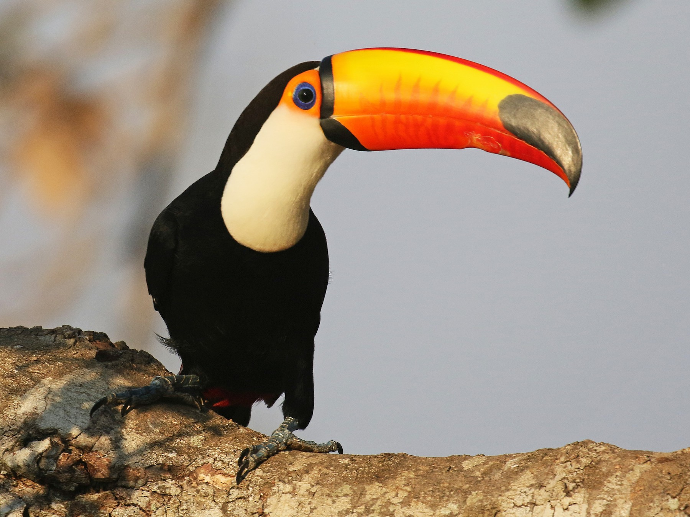

Tucanes
Los tucanes son aves tropicales fácilmente reconocibles por su gran pico colorido y su llamativo plumaje.
Características principales
- 📏 Tamaño: Entre 30 y 65 cm de longitud.
- ⚖️ Peso: De 130 gramos a 680 gramos, dependiendo de la especie.
- 🌿 Habitan en las selvas tropicales de América Central y del Sur.
- 🧡 Su pico puede representar hasta un tercio de su tamaño total, pero es muy ligero.
Alimentación
Los tucanes son omnívoros y se alimentan principalmente de frutas, pero también pueden consumir insectos, huevos y pequeños reptiles.
Especies destacadas
- Tucán toco (Ramphastos toco) - El más grande de su familia.
- Tucán pico iris (Ramphastos sulfuratus) - Reconocido por su pico multicolor.
- Arasarí fajado (Pteroglossus torquatus) - Una especie más pequeña de tucán.
Curiosidades
¿Sabías que los tucanes pueden regular su temperatura corporal gracias a su gran pico? Funciona como un sistema de enfriamiento natural.
⬅ Volver a la sección de aves